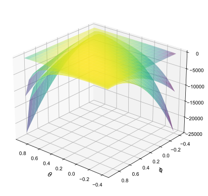
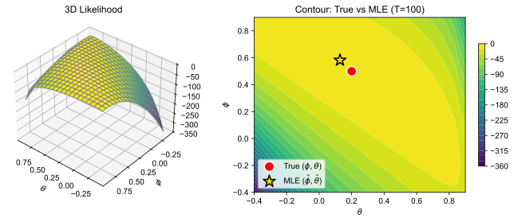
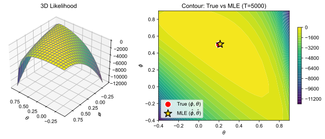
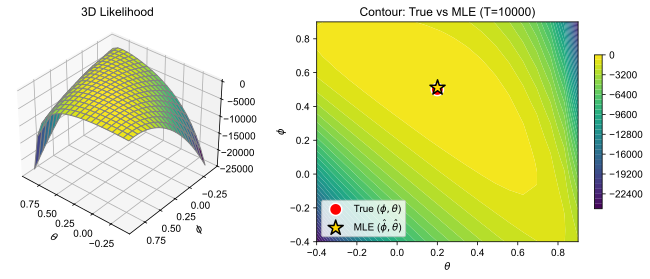

Lecture 6: Estimation of ARMA Models
Raul Riva
FGV, Brazilian School of Economics and Finance (FGV EPGE)
October 2026
Econometrics I (Part I)
Introduction
Where We Are
- So far, we took the parameters of ARMA models as given
- In practice, we need to estimate them from data
- Many ways to do it: maximum likelihood, method of moments, Kalman filter, etc.
- We will focus on MLE
- Good software for ARMA estimation usually gives you several options
- More than mastering math tricks and details, understand the big picture
A Preview
- It is always the MA part that complicates things
- A natural estimator for an AR(\(p\)): OLS of \(y_t\) on \(y_{t-1}, \ldots, y_{t-p}\)
- Mild conditions guarantee consistency, asymptotic normality, blah, blah, blah…
- But for ARMA(\(p,q\)) models, we cannot do that! We do not observe \(\varepsilon_t\)!!!
- MLE requires a distributional assumption for \(\varepsilon_t\)
- We will relax that later, when we touch on “quasi-MLE”
- We start with given values of \(p\) and \(q\) and discuss model choice later
Preliminaries
- Assume that \(\varepsilon_t \iid N(0,\sigma^2)\)
- This implies that \(y_t\) is a Gaussian random variable. Why?
- Denote by \(\symbf{\Theta}\) the vector of parameters to be estimated
- First step: characterize the joint distribution of the sample \(\symbf{y} = (y_1, \ldots, y_T)'\)
- Denote this distribution by \(f_{y_T, y_{T-1}, \ldots, y_1}(\symbf{y}; \symbf{\Theta})\)
- Recall: \(f_{Y|X}(y \mid x) = f_{Y,X}(y, x) / f_X(x) \implies f_{Y,X}(y,x) = f_{Y|X}(y \mid x) f_X(x)\)
- For any integer \(k \geq 1\):
\[ \boxed{ f_{y_T, \ldots, y_1}(\symbf{y}; \symbf{\Theta}) = f_{y_k, \ldots, y_1}(y_k, \ldots, y_1; \symbf{\Theta}) \cdot \prod_{t=k+1}^T f_{y_t \mid y_{t-1}, \ldots, y_1}\bigl(y_t \mid y_{t-1}, \ldots, y_1; \symbf{\Theta}\bigr) } \]
Questions?
The AR(p) Case
The AR(\(p\)) Likelihood
- Consider the AR(\(p\)) model below and let \(\symbf{\Theta} = (c, \phi_1, \ldots, \phi_p, \sigma^2)\):
\[ y_t = c + \phi_1 y_{t-1} + \ldots + \phi_p y_{t-p} + \varepsilon_t, \qquad \varepsilon_t \iid N(0,\sigma^2) \]
- Notice that \(y_t \mid y_{t-1}, \ldots, y_{t-p} \sim N(c + \phi_1 y_{t-1} + \ldots + \phi_p y_{t-p}, \sigma^2)\). Therefore:
\[ f_{y_t | y_{t-1}, \ldots, y_1}(y_t \mid y_{t-1}, \ldots, y_1; \symbf{\Theta}) = \frac{1}{\sqrt{2\pi \sigma^2}} e^{-\frac{(y_t - c - \phi_1 y_{t-1} - \ldots - \phi_p y_{t-p})^2}{2\sigma^2}} \]
- The likelihood of the first \(p\) observations, \(f_{y_p, \ldots, y_1}(y_p, \ldots, y_1; \symbf{\Theta})\), is more involved
- The \(p \times 1\) vector \(\symbf{y}_{1:p} = (y_1, \ldots, y_p)'\) is multivariate normal:
\[ \symbf{y}_{1:p} \sim N(\symbf{\mu}, \symbf{\Omega}), \qquad \symbf{\mu} = \frac{c}{1 - \sum_{i=1}^p \phi_i} \symbf{1}, \qquad \symbf{\Omega}_{ij} = \gamma(|i-j|) \quad \forall i,j \in \{1,\ldots,p\} \]
The Full Likelihood
- The likelihood of the first \(p\) observations is given by:
\[ f_{y_p, \ldots, y_1}(y_p, \ldots, y_1; \symbf{\Theta}) = (2\pi)^{-p/2}|\symbf{\Omega}^{-1}|^{1/2} e^{-\frac{1}{2} (\symbf{y}_{1:p} - \symbf{\mu})' \symbf{\Omega}^{-1} (\symbf{y}_{1:p} - \symbf{\mu})} \]
- From here, we can write the full likelihood function:
\[ \begin{aligned} f_{y_T, \ldots, y_1}(\symbf{y}; \symbf{\Theta}) &= f_{y_p, \ldots, y_1}(y_p, \ldots, y_1; \symbf{\Theta}) \cdot \prod_{t=p+1}^T f_{y_t \mid y_{t-1}, \ldots, y_1}\bigl(y_t \mid y_{t-1}, \ldots, y_1; \symbf{\Theta}\bigr)\\ &= (2\pi)^{-p/2}|\symbf{\Omega}^{-1}|^{1/2} e^{-\frac{1}{2} (\symbf{y}_{1:p} - \symbf{\mu})' \symbf{\Omega}^{-1} (\symbf{y}_{1:p} - \symbf{\mu})} \cdot \prod_{t=p+1}^T \frac{1}{\sqrt{2\pi \sigma^2}} e^{-\frac{(y_t - c - \sum_{i=1}^p \phi_i y_{t-i})^2}{2\sigma^2}}\\ &= (2\pi)^{-T/2} \sigma^{-(T-p)} |\symbf{\Omega}^{-1}|^{1/2} e^{-\frac{1}{2} (\symbf{y}_{1:p} - \symbf{\mu})' \symbf{\Omega}^{-1} (\symbf{y}_{1:p} - \symbf{\mu})} \cdot e^{-\frac{1}{2\sigma^2} \sum_{t=p+1}^T (y_t - c - \sum_{i=1}^p \phi_i y_{t-i})^2} \end{aligned} \]
The Log-Likelihood Function
- We always optimize the log-likelihood function \(\mathcal{L}(\symbf{\Theta} \mid \symbf{y}) = \log f_{y_T, \ldots, y_1}(\symbf{y}; \symbf{\Theta})\):
\[ \begin{aligned} \mathcal{L}(\symbf{\Theta} \mid \symbf{y}) &= -\frac{T}{2} \log(2\pi) - (T-p) \log(\sigma) + \frac{1}{2} \log|\symbf{\Omega}^{-1}| \\[0.3em] &\qquad {\color[RGB]{198,40,40}{- \frac{1}{2} (\symbf{y}_{1:p} - \symbf{\mu})' \symbf{\Omega}^{-1} (\symbf{y}_{1:p} - \symbf{\mu})}} \; {\color[RGB]{0,114,188}{- \frac{1}{2\sigma^2} \sum_{t=p+1}^T \Bigl(y_t - c - \sum_{i=1}^p \phi_i y_{t-i}\Bigr)^2}} \end{aligned} \]
- The blue part looks like the OLS objective function
- The red part “distorts” this objective function
Full MLE Is Costly
- Full ML estimation requires optimizing this function w.r.t. \(\symbf{\Theta}\)
- This requires inverting a \(p \times p\) matrix every time we evaluate the function

- Wait a minute… what if \(T \gg p\)?
- Then the main contribution to the log-likelihood comes from the blue part
- This suggests a simpler approach: conditional MLE
- Treat the first \(p\) observations as fixed (non-random)
- Approximate \(\mathcal{L}(\symbf{\Theta} \mid \symbf{y})\) by \(\log f_{y_T, \ldots, y_{p+1} \mid \symbf{y}_{1:p}}(\symbf{y}; \symbf{\Theta})\)
The Numerical Shortcut for the AR(\(p\)) Case
- Up to a constant, we have:
\[ \log f_{y_T, \ldots, y_{p+1} \mid \symbf{y}_{1:p}}(\symbf{y}; \symbf{\Theta}) = - \sum_{t=p+1}^T \frac{(y_t - c - \sum_{i=1}^p \phi_i y_{t-i})^2}{2\sigma^2} - (T-p) \log(\sigma) \]
- The estimators for \(c\) and the \(\phi_i\)’s are the OLS estimators from regressing \(y_t\) on \(y_{t-1}, \ldots, y_{t-p}\)
- Super simple closed-form solutions! 😎
- The estimator for \(\sigma^2\) is just the (biased) sample variance of the OLS residuals
- If \(T\) is large, this is a very good approximation to the full MLE
- \(\mathcal{L}(\symbf{\Theta} \mid \symbf{y})\) is efficiently computed using the Kalman filter: darker magic for next year!
Questions?
The MA(q) Case
The MA(\(q\)) Model
- Consider the MA(\(q\)) model below and let \(\symbf{\Theta} = (\mu, \theta_1, \ldots, \theta_q, \sigma^2)\):
\[ y_t = \mu + \varepsilon_t + \theta_1 \varepsilon_{t-1} + \ldots + \theta_q \varepsilon_{t-q}, \qquad \varepsilon_t \iid N(0,\sigma^2) \]
- No hope for an “OLS”-type trick… we do not see the shocks…
- Again two main approaches: full MLE and conditional MLE
- We focus on conditional MLE; full MLE is in Hamilton (1994), Chapter 5
- If \(T\) is large, the two approaches give very similar results
- Similar to forecasting with finite data in the last lecture!
Backing Out the Shocks
- Key observation: \(y_t \mid \varepsilon_{t-1}, \ldots, \varepsilon_{t-q} \sim N(\mu + \theta_1 \varepsilon_{t-1} + \ldots + \theta_q \varepsilon_{t-q}, \sigma^2)\)
- But how is that useful if we do not observe \(\varepsilon_t\)?
- Assume \(\varepsilon_{-q+1} = \ldots = \varepsilon_{0} = \E[\varepsilon_t] = 0\)
- Then start a recursion, as in the forecasting case
- Given \(\symbf{\Theta}\), every \(\varepsilon_t\) is a function of the data
\[ \begin{aligned} \varepsilon_{1} &= y_{1} - \mu\\ \varepsilon_{2} &= y_{2} - \mu - \theta_1 \varepsilon_{1}\\ \varepsilon_{3} &= y_{3} - \mu - \theta_1 \varepsilon_{2} - \theta_2 \varepsilon_{1}\\ &\;\;\vdots\\ \varepsilon_{t} &= y_{t} - \mu - \theta_1 \varepsilon_{t-1} - \ldots - \theta_q \varepsilon_{t-q} \\ &\;\;\vdots\\ \varepsilon_{T} &= y_{T} - \mu - \theta_1 \varepsilon_{T-1} - \ldots - \theta_q \varepsilon_{T-q} \end{aligned} \]
The Conditional Log-Likelihood Function
- From here, the conditional log-likelihood function is (up to a constant):
\[ \begin{aligned} \log f_{y_T, \ldots, y_1 \mid \varepsilon_{-q+1} = \ldots = \varepsilon_{0} = 0}(\symbf{y}; \symbf{\Theta}) &= \sum_{t=1}^T \log f_{y_t \mid \varepsilon_{t-1}, \ldots, \varepsilon_{t-q}}(y_t \mid \varepsilon_{t-1}, \ldots, \varepsilon_{t-q}; \symbf{\Theta})\\ &= - \sum_{t=1}^T \frac{\varepsilon_t^2}{2\sigma^2} - T \log(\sigma) \end{aligned} \]
- When there is an MA component, the logical flow is:

Questions?
The ARMA(p,q) Case
The ARMA(\(p,q\)) Model
- Consider a Gaussian ARMA(\(p,q\)) model and let \(\symbf{\Theta} = (c, \phi_1, \ldots, \phi_p, \theta_1, \ldots, \theta_q, \sigma^2)\):
\[ y_t = c + \phi_1 y_{t-1} + \ldots + \phi_p y_{t-p} + \varepsilon_t + \theta_1 \varepsilon_{t-1} + \ldots + \theta_q \varepsilon_{t-q}, \qquad \varepsilon_t \iid N(0,\sigma^2) \]
- We can combine the two previous approaches
- Given \(\symbf{\Theta}\), we back out \(\varepsilon_t\) recursively
- Notice that
\[ y_t \mid y_{t-1}, \ldots, y_1, \varepsilon_{t-1}, \ldots, \varepsilon_{t-q} \sim N\Bigl(c + \sum_{i=1}^p \phi_i y_{t-i} + \sum_{j=1}^q \theta_j \varepsilon_{t-j}, \; \sigma^2\Bigr) \]
- Then we are ready to use the conditioning trick once again!
The Recursion
- As with the AR(\(p\)), treat \(y_1, \ldots, y_p\) as fixed
- Assume that \(\varepsilon_p = \varepsilon_{p-1} = \ldots = \varepsilon_{p-q+1} = 0\)
- The first shock to be backed out is \(\varepsilon_{p+1} = y_{p+1} - c - \sum_{i=1}^p \phi_i y_{p+1-i}\)
- Then we get \(\varepsilon_{p+2} = y_{p+2} - c - \sum_{i=1}^p \phi_i y_{p+2-i} - \theta_1 \varepsilon_{p+1}\)
- And so on…
- Skeptical of “assuming values” for the shocks? Usually \(p\) and \(q\) are small compared to \(T\)!
- You will almost never see \(q > 10\) or \(p > 20\) in practice!
The Conditional Log-Likelihood Function
- The conditional log-likelihood function, up to a constant, is:
\[ \mathcal{L}(\symbf{\Theta} \mid \symbf{y}) = \log f_{y_T, \ldots, y_{p+1} \mid \symbf{y}_{1:p},\, \varepsilon_p = \ldots = \varepsilon_{p-q+1} = 0}(\symbf{y}; \symbf{\Theta}) = - \sum_{t=p+1}^T \frac{\varepsilon_t^2}{2\sigma^2} - (T-p) \log(\sigma) \]
- The logical flow is the same as in the MA(\(q\)) case
Regarding numerical optimization:
- Guarantees the numerical method converges to the global maximum? No
- Much harder as \(p\) and \(q\) grow? Yes and no: increasing \(p\) is fine, but \(q\) is hell
- Where to start the optimization? OLS estimates for \(\phi\) are a good shot
- What about \(\theta\)? Start with zeros or small values
- Try several starting points and make sure you get similar answers
Questions?
Inference
Doing Inference
- Ok great, we can estimate ARMA(\(p,q\)) models. How do we do inference?
- We use standard MLE results
- Important assumptions: a correctly specified model and \(\symbf{\Theta}_0\) in the interior of the parameter space
- Recall that, if the model is correctly specified,
\[ \sqrt{T}\left(\hat{\symbf{\Theta}} - \symbf{\Theta}_0\right) \xrightarrow{d} N\left(0, \mathcal{I}^{-1}(\symbf{\Theta}_0)\right) \]
where \(\mathcal{I}(\symbf{\Theta})\) is the Fisher information matrix
- Let \(\ell_t(\symbf{\Theta}) = \log f_{y_t \mid \symbf{y}_{t-1}}(y_t \mid \symbf{y}_{t-1}; \symbf{\Theta})\). In this case,
\[ \mathcal{I}(\symbf{\Theta}_0) = -\E\left[\frac{\partial^2 \ell_t(\symbf{\Theta}_0)}{\partial \symbf{\Theta} \partial \symbf{\Theta}'}\right] = \E\left[\frac{\partial \ell_t(\symbf{\Theta}_0)}{\partial \symbf{\Theta}}\frac{\partial \ell_t(\symbf{\Theta}_0)}{\partial \symbf{\Theta}'}\right] \]
Feasible Inference
- Of course we do not know \(\mathcal{I}(\symbf{\Theta}_0) \implies\) it needs to be estimated!
- Theory suggests two equally valid estimators, built from two objects
- The Hessian:
\[ \mathcal{H}(\hat{\symbf{\Theta}}) \equiv \frac{1}{T-p} \cdot \frac{\partial^2 \mathcal{L}(\hat{\symbf{\Theta}} \mid \symbf{y})}{\partial \symbf{\Theta} \partial \symbf{\Theta}'} = \frac{1}{T-p} \sum_{t=p+1}^{T}\frac{\partial^2 \ell_t(\hat{\symbf{\Theta}})}{\partial \symbf{\Theta} \partial \symbf{\Theta}'} \]
- The score and its outer product:
\[ \mathcal{S}_t(\hat{\symbf{\Theta}}) \equiv \frac{\partial \ell_t(\hat{\symbf{\Theta}})}{\partial \symbf{\Theta}}, \qquad \mathcal{O}(\hat{\symbf{\Theta}}) \equiv \frac{1}{T - p} \sum_{t=p+1}^T \mathcal{S}_t(\hat{\symbf{\Theta}}) \mathcal{S}_t(\hat{\symbf{\Theta}})' \]
- Then, estimate \(\mathcal{I}(\symbf{\Theta}_0)\) by either \(-\mathcal{H}(\hat{\symbf{\Theta}})\) or \(\mathcal{O}(\hat{\symbf{\Theta}})\)
- (Adjust the starting point of the sums as needed; it doesn’t matter asymptotically)
Quasi-MLE
- What if \(\varepsilon_t\) is not Gaussian?
- The MLE converges to a different \(\symbf{\Theta}_0\)
- This pseudo-true value minimizes the Kullback-Leibler divergence between the true model and the assumed Gaussian model
- The idea, and the term quasi-MLE, are due to White (1982)
- Under regularity conditions, \(\hat{\symbf{\Theta}}\) is still consistent for this \(\symbf{\Theta}_0\) and asymptotically normal
- But the variance is no longer \(\mathcal{I}^{-1}(\symbf{\Theta}_0)\)…
The Sandwich Variance
- The asymptotic distribution is now:
\[ \sqrt{T}\left(\hat{\symbf{\Theta}} - \symbf{\Theta}_0\right) \xrightarrow{d} N\Bigl(0, \underbrace{\mathcal{H}_0^{-1} \mathcal{J}_0 \mathcal{H}_0^{-1}}_{\text{the "sandwich" variance}}\Bigr) \]
where
\[ \mathcal{H}_0 \equiv \E\left[\frac{\partial^2 \ell_t(\symbf{\Theta}_0)}{\partial \symbf{\Theta} \partial \symbf{\Theta}'}\right], \quad \mathcal{J}_0 \equiv \E\left[\frac{\partial \ell_t(\symbf{\Theta}_0)}{\partial \symbf{\Theta}}\frac{\partial \ell_t(\symbf{\Theta}_0)}{\partial \symbf{\Theta}'}\right] \]
- The “bread” uses the Hessian and the “meat” uses the outer product of the score
- Correct specification \(\implies -\mathcal{H}_0 = \mathcal{J}_0 = \mathcal{I}(\symbf{\Theta}_0)\), and the sandwich collapses to \(\mathcal{I}^{-1}(\symbf{\Theta}_0)\)
- The estimator for the sandwich is \(\mathcal{H}^{-1}(\hat{\symbf{\Theta}})\, \mathcal{O}(\hat{\symbf{\Theta}})\, \mathcal{H}^{-1}(\hat{\symbf{\Theta}})\)
Questions?
Some Simulations
The ARMA(1,1) Case: a Simulated Path
An ARMA(1,1) with \(\phi = 0.5\), \(\theta = 0.2\), \(\mu = 0\) and \(\sigma^2 = 1\). One simulated path with \(T = 100\):

The Likelihood Surface (\(T = 100\))

The Likelihood Surface (\(T = 5000\))

The Likelihood Surface (\(T = 10000\))

The Likelihood Gets More Concentrated!
- \(\uparrow T \implies\) tighter likelihood. Why?
- How is the Hessian at the optimum related to this?
- What is the connection with the asymptotic distribution of the MLE?
Questions?
How to Choose p and q?
The Model Selection Problem
- So far, we have assumed that \(p\) and \(q\) are known
- In practice, we need to choose them from the data
- Naive approach: maximize the log-likelihood over all possible \((p,q)\) pairs
- But this always favors larger models! Why?
- Adding parameters can never decrease the maximized log-likelihood
- It converges to a perfect fit in sample as \((p,q) \to \infty\) (overfitting)
- We need a formal criterion that penalizes model complexity
- This leads to information criteria: balance fit vs. parsimony
Information Criteria: General Framework
- The general form of information criteria is:
\[ \boxed{\text{IC} = -2 \cdot \mathcal{L}(\hat{\symbf{\Theta}} \mid \symbf{y}) + \text{penalty}(k, T)} \]
where \(k\) is the number of parameters and \(T\) is the sample size
- The first term measures goodness of fit (we want it small)
- The second term penalizes complexity (increases with \(k\))
- We choose the model that minimizes the IC
- Different penalties lead to different criteria
- The key trade-off: smaller penalty \(\implies\) more likely to select larger models
The Main Information Criteria
Let \(k = p + q + 2\) be the number of parameters in an ARMA(\(p,q\)) model (including \(c\) and \(\sigma^2\))
Akaike Information Criterion (AIC):
\[ \boxed{\text{AIC} = -2 \cdot \mathcal{L}(\hat{\symbf{\Theta}} \mid \symbf{y}) + 2k} \]
- It targets the model that minimizes the expected KL divergence to the true model
- It might deliver an over-parametrized model (remember the minimal representation?)
Bayesian Information Criterion (BIC), or Schwarz Criterion (SIC):
\[ \boxed{\text{BIC} = -2 \cdot \mathcal{L}(\hat{\symbf{\Theta}} \mid \symbf{y}) + k \log(T)} \]
- It approximates the model with the highest posterior probability (assuming equal priors)
- It is consistent: selects the true model (if it is in the candidate set) with probability \(\to 1\) as \(T \to \infty\)
Comparing the Penalties
- For \(T \geq 8\), \(\log(T) > 2\), so BIC penalizes more heavily than AIC
| Sample Size | AIC penalty | BIC penalty |
|---|---|---|
| \(T = 50\) | \(2k\) | \(3.91k\) |
| \(T = 100\) | \(2k\) | \(4.61k\) |
| \(T = 500\) | \(2k\) | \(6.21k\) |
| \(T = 1000\) | \(2k\) | \(6.91k\) |
- As \(T \to \infty\), the BIC penalty grows much faster than the AIC one
- Implication: BIC tends to select more parsimonious models than AIC
How to Use Information Criteria in Practice
Step-by-step procedure:
- Choose maximum orders \(p_{\max}\) and \(q_{\max}\) (often based on theory or exploratory analysis)
- Estimate all ARMA(\(p,q\)) models for \(p \in \{0, 1, \ldots, p_{\max}\}\) and \(q \in \{0, 1, \ldots, q_{\max}\}\)
- Compute your chosen IC for each model
- Select the model with the minimum IC value
Important notes:
- All models must be estimated on the same sample (same \(T\))
- Start with reasonable \(p_{\max}\) and \(q_{\max}\) (e.g., 5–10 for quarterly data, 12–24 for monthly)
- If the selected model is at the boundary, consider increasing the maximum orders
Questions?
The End
References
- Chapter 5 of Time Series Analysis, by James Hamilton (1994), for ARMA estimation
- Chapter 28 of Econometrics, by Bruce Hansen (2022), for model selection
- White (1982), “Maximum Likelihood Estimation of Misspecified Models”, Econometrica, for quasi-MLE